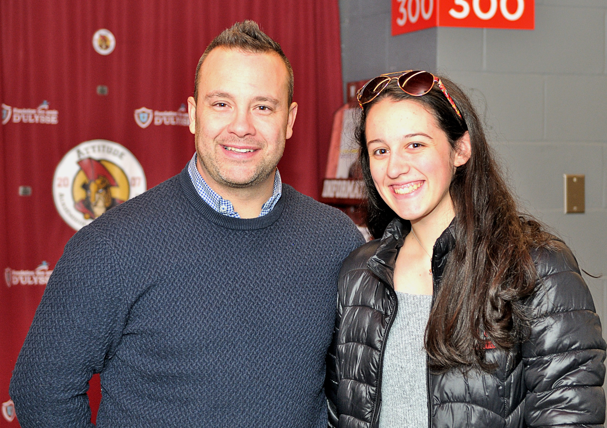

Votre contenu vient ici. Your content goes here.

Pénélope et un des entraîneurs suite à une entrevue lors de la deuxième année de l'équipe.Crédit photo: Daniel Dupuis
Pénélope a créé de beaux liens d'amitié depuis cinq ans. Certains joueurs ou membres de l'équipe sont encore présents.
Elle est donc heureuse de passer ses samedis soirs à rire en faisant des entrevues , à faire des activités spéciales pour les partisans et s'occuper de l'organisation comme si ils étaient ses grands frères.
D'ailleurs, elle est très fière de voir tous le progrès qu'elle a fait. Voici une de ses premières entrevues avec l'équipe: